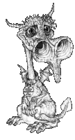

|
|
Dame Sybil Deirdre Olgivanna RamkinLady Sybil Ramkin | |
C'est la femme la plus riche d'Ankh-Morpork. Elle possède environ un dixième d'Ankh sans compter plusieurs grandes propriétés à Morpork et d'immenses terres cultivables. Elle reste quasiment la dernière survivante d'une des familles les plus anciennes d'Ankh. C'est une grande dame imposante...très imposante, coiffée par une masse de cheveux châtains (c'est une perruque : les dragons, ça pardonne pas...). Elle est en quelque sorte le nec plus ultra d'une famille qui a toujours créé des individus dotés d'une solide ossature plutôt que d'une grande beauté. Il semble qu'elle ai consacré toute sa vie à l'élevage des dragons des marais dans un enclos derrière la maison. Elle tient aussi le Sanctuaire du Soleil pour dragons malades. Elle a publié plusieurs ouvrages concernant les affections des dragons, Suger très vaste et sans aucun doute infini.  Avant son mariage avec Vimaire, elle vivait seule avec le majordome de la famille et une trentaine de dragons et d'utilisait que trois des trente-quatre chambres de la demeure familiale. C'est une vieille maison agréable dotée de jardins biens dessinés et dus à un ancêtre de Dame Ramkin qui tira une flèche dans la jambe de « Bougre de Sagouin » Jeanson (à peu de chose près, Jeanson est à l'architecture ce que Rincevent est à la magie : ce qui pouvait lui arriver de pire) un jour où le malheureux voulait s'engager dans l'allée de la maison. Depuis son mariage, toute une équipe s'occupe d'un jardin qui été dans un état incroyable de délabrement et Dame Ramkin refait surface dans la société morporkienne tel un sous-marin dans un lac de canotage. Dame Ramkin impressionne dans : Au Guet, Le Guet des Orfèvres, Pieds d'Argile, Va-t-en-guerre. |